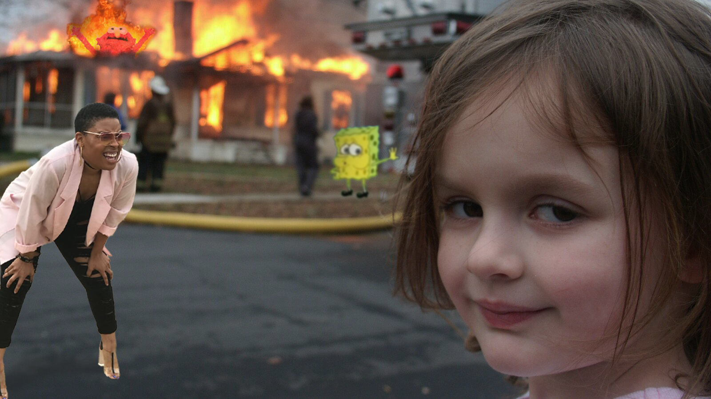

Meme Mashup
A meme mashup creates something new and meaningful from the source memes. Each individual meme used in the mashup has is own meaning and when combined, the mashup as a whole piece creates a new meaning. I used Adobe Photoshop to create the mashups.

The base of this mashup is the disaster girl meme, and she is now the evil Kermit. The Elmo on her shoulder is supporting her in the chaos of the fire while the regular Kermit watches the woman and Spongebob who just escaped the building.

A version of the above without the evil Kermit meme. Both Spongebob and the woman escape the fire. The woman wonders if the child is responsible for the fire. Rising Elmo in his element.

The cat and the suprised Pikachu look similar. The woman is trying to tell the difference between them.